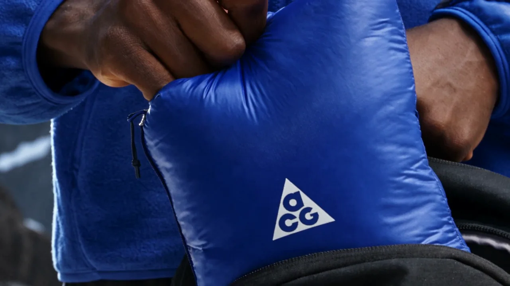
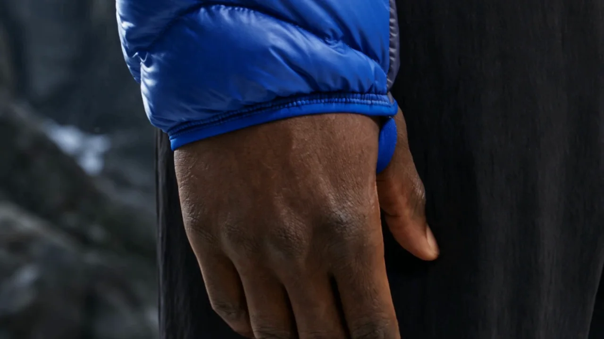
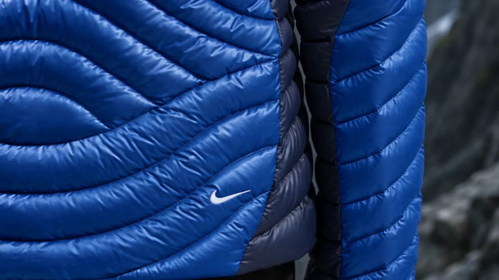
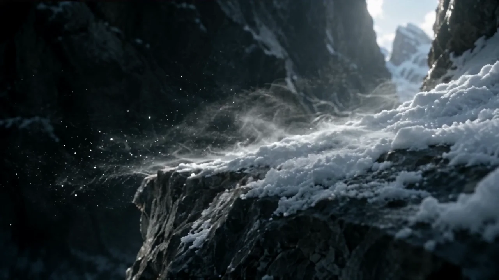
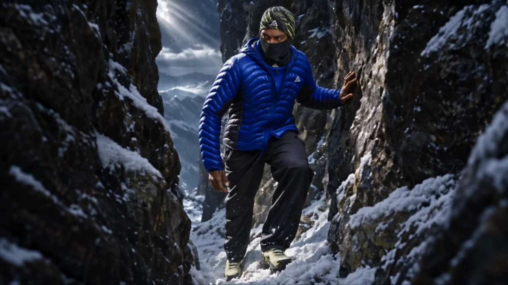
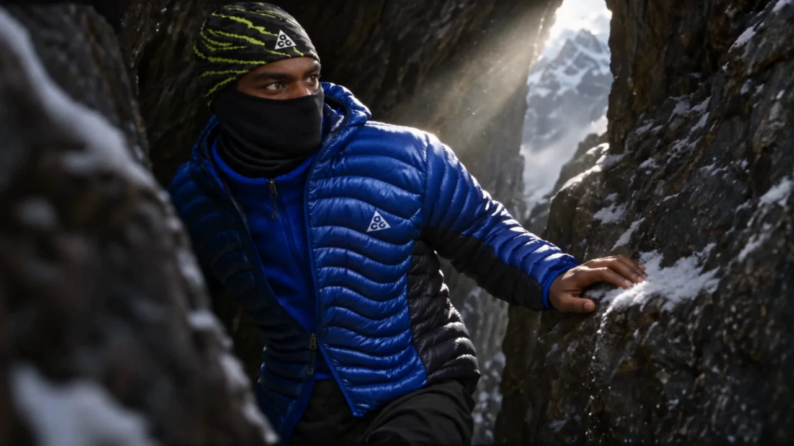
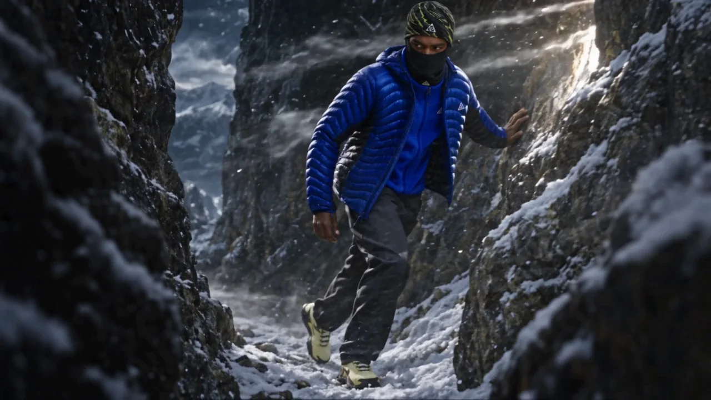
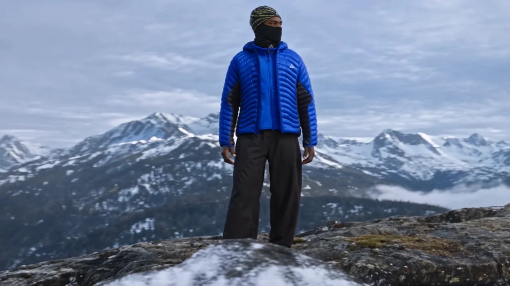

Nike ACG / Independent concept film
Winter. Taken in Stride.
Tactile preparation. A demanding mountain passage. An assured summit finish.
- Role
- Creative direction + design
- Year
- 2026
- Studio
- Dream City Studio
Make winter feel ready to move.
Close preparation gives way to a demanding rock passage, then opens onto a summit. Cobalt apparel anchors the sequence as dark stone, moving powder and distant mountain light build depth.
Physical action, not frozen poses.
Early detail shots felt too still. Gripping pressure, wrist articulation, torso rotation and cloth response replaced static posing, while the camera moved through real spatial depth.
The extended ending gives the wearer an assured stand, a broad orbit and a live closing hold. Development boards guided composition and light; the final performance determined the cut.
Eight shots. Three movements.
The observed cuts shape this 20-second film. Times below are rounded from the final frame boundaries, rather than the earlier development plan.
- Prepare
Pouch, cuff and a brief quilting macro put hands and material into motion.
- Push through
Wind-scoured rock, passage entry, a covered face and forward movement carry the effort.
- Take the summit
The landscape opens into an orbit and live hold. The closing headline arrives at 17 seconds.








Keep the performance. Finish with restraint.
The selected motion stays at normal speed, with only terminal excess removed. The headline fades in from 17 to 17.5 seconds and holds through the final frame, with no fade to black.
Provider-generated sound is retained and loudness-normalized. No new score was added. The delivered film remains unchanged: 20 seconds, 1280 × 720, 24 fps, H.264 / AAC.
An independent, AI-assisted concept by Ken Bechtold, not an official Nike commission. Generated product geometry and marks remain approximate.